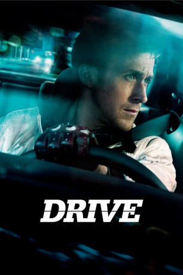

#478 Drive
Auszeichnungen: für 1 Oscars nominiert
 
 IMDB-Wertung: 7.8 / 10
IMDB-Wertung: 7.8 / 10  Metascore: 78
Metascore: 78 
Tagsüber arbeitet "Driver" unauffällig als Stuntfahrer in Hollywood, abends holt er sich seinen Kick, indem er Aufträge für die Mafia erledigt und sein Können als halsbrecherischer Fahrer von Fluchtautos unter Beweis stellt. Als einer der Raubzüge schiefgeht, gerät er unter Verdacht seiner Auftraggeber, die ein Kopfgeld auf ihn aussetzen. Fortan muss er beweisen, wie viel ihm an seinem Überleben gelegen ist.
Jahr: 2011
Dauer: 100 Minuten
FSK: 18
Land: USA Studio: FilmDistrictTonspuren: DTS - ,
Untertitel:
Auflösung: 1080p (1920x800) Größe: 5038 MB
Genre: Krimi, Drama
Regisseur: Nicolas Winding Refn
Drehbuch: Hossein Amini, James Sallis
Soundtrack: Cliff Martinez
Darsteller:
 Ryan Gosling als Driver
Ryan Gosling als Driver Carey Mulligan als Irene
Carey Mulligan als Irene Bryan Cranston als Shannon
Bryan Cranston als Shannon Albert Brooks als Bernie Rose
Albert Brooks als Bernie Rose Oscar Isaac als Standard
Oscar Isaac als Standard Christina Hendricks als Blanche
Christina Hendricks als Blanche Ron Perlman als Nino
Ron Perlman als Nino Jeff Wolfe als Tan Suit
Jeff Wolfe als Tan Suit Russ Tamblyn als Doc
Russ Tamblyn als Doc Joe Bucaro III als Chauffeur
Joe Bucaro III als Chauffeur- Tiara Parker als Young Woman
- Tim Trella als Hitman #1
- Jimmy Hart als Hitman #2
- Tina Huang als Waitress
- Andy San Dimas als Stripper
 John Pyper-Ferguson als Bearded Redneck
John Pyper-Ferguson als Bearded Redneck- Craig Baxley Jr. als Masked Man #1
 Joe Pingue als Assistant Director #1
Joe Pingue als Assistant Director #1- Chris Muto als Caterer
- Cesar Garcia als Waiter
- Mara LaFontaine als Movie Star Girlfriend
- Laurene Landon als Actress , uncredited
- Sarah Adela Tirado als Chola , uncredited
- Kaden Leos als Benicio
 James Biberi als Cook
James Biberi als Cook- Kenny Richards als Masked Man #2
- Dieter Busch als Assistant Director #2
- Rachel Dik als Newscaster
- Steve Knoll als Movie Star
- Teonee Thrash als Police Officer
- Ralph Lawler als Basketball Announcer
- Caitlin Litzinger als Stripper , uncredited
Datei: X:\FSK18-2011\Drive (2011, FSK18, 1920x800).mkv seit 01.03.2015
Festplatte: FSK18
 Es gibt insgesamt 30 Filme in der Gruppe 'FSK18-2011'
Es gibt insgesamt 30 Filme in der Gruppe 'FSK18-2011'